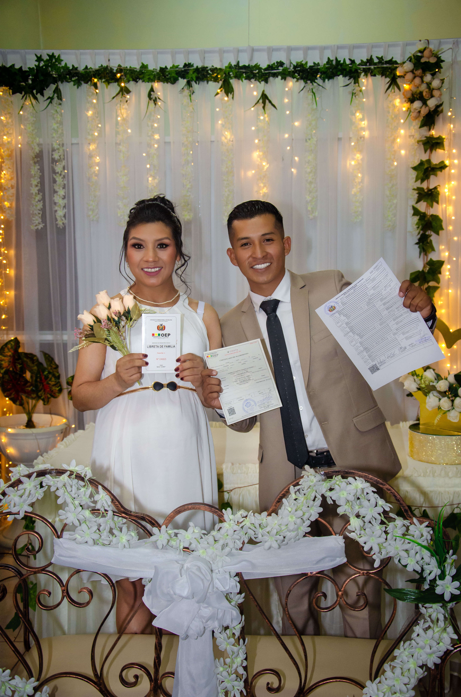

Fotografía de Eventos Especiales
Descripción del proyecto
Captura de paisajes urbanos en distintas horas del día, destacando la interacción entre luces artificiales y la arquitectura moderna. Se trabajó en la composición, la edición y el color grading para resaltar la atmósfera de cada toma.
Equipo utilizado:
- Cámara Sony A7 III
- Lente 35mm f/1.8
- Adobe Lightroom
Resultados:
Esta serie fue expuesta en una galería local y publicada en redes sociales, logrando un gran impacto visual y conexión con la audiencia.
⬅ Volver al portafolio